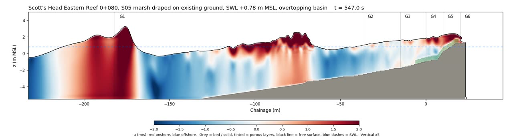

The question
Rock structures are the familiar answer. They are also costly, they bury habitat, and they are hard to change once built. Nature-based options, such as marsh plants on the upper beach or seagrass on the sea bed, are cheaper and kinder to the coast, but nobody builds them without evidence that they work in a storm.
This page walks through that evidence: what we tested, what the water did, and what we would and would not conclude from it.
The places
People here live on a narrow, low strip between the sea and steep hills. When a hurricane raises the sea and sends long waves across the reef, there is little room to retreat. Choose a place to see it on the map.
How we tested
Engineers often test sea defences in a laboratory wave tank: a long glass channel with a paddle at one end and a model shoreline at the other. We built the same thing digitally, with a model called IH2VOF.
Each simulation is a slice through the shoreline, from deep water to the land behind. A paddle sends in ten minutes of irregular storm waves, sized from a 50-year storm study of the coast (waves about 2.8 m high every 13 seconds at Scott's Head). The model tracks every splash on a grid of cells half a metre wide.
For each option we changed only the shoreline, never the storm. So any difference in flooding comes from the option itself.
We measured four things: wave height near the shore, how high the water ran up, how fast it moved along the bed, and above all how much water got over the top.

The land is on the right. Heights are stretched five times so the waves are easy to see, and the ten minute storm plays in one minute.
The ranking
Put side by side, the options fall into two clear groups. The engineered rock design and the two options with marsh plants stop most of the flooding. Any single measure in front of the shore stops about a third.
The surprise
Sea defences are often judged by how much smaller they make the waves. We expected the options that calmed the waves most to flood the least.
They did not. The cobble beach made waves at the shore two thirds smaller, yet flooding fell by only a third. The marsh left the waves as big as before, yet flooding fell by 87 %.
The reason is where the flooding is decided: in the last few metres, at the top of the beach. A thin, fast sheet of water rushes up and over. Whatever slows or blocks that sheet, such as dense plants or a higher crest, does more than anything that happens further out to sea.
The lesson for design: measure the flooding itself, not the wave height.
A higher sea
We repeated the main comparisons with the sea 0.70 m higher, the 50-year storm water level. That is also a fair stand-in for future sea level rise. At Scott's Head, flooding without any works tripled. The rock design, which had stopped 73 % of the flooding, now stopped 35 %.
The backshore is under water before the waves arrive. 370 cubic metres per metre in ten minutes.
Smaller waves, but the crest is now overflowed in a few large surges. 241 cubic metres per metre.
Designs that work by being a little higher than the water lose the most, because the rising sea uses up that height. They should be checked at the higher level and built so the crest can be raised later.
The other sites
Conclusions
Design to the amount of flooding and the largest single surge, at the higher sea level. Pair anything that calms waves offshore with something that acts at the top of the beach: a raised crest, or a dense band of vegetation.
Before the marsh options are preferred over rock, they should be confirmed with the higher sea level and with a vegetation model that has been checked against measurements.
Keeping ourselves honest